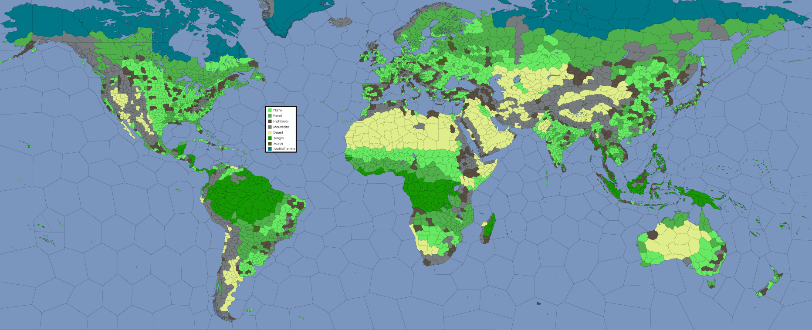

🗺️ The Map & Expansions
Conquer New Territories and Expand Your Empire
� Starting Out
You will spawn with 20 tiles and 3 cities. Snaking is technically allowed now but highly encouraged to follow natural borders. All tiles must be within 4 tiles of a city - you cannot spawn with a tile further than 4 away from your nearest city.
🏞️ Land Spawning Rules
- • Follow natural borders when possible
- • Maximum 4 tiles from any city
- • 20 tiles total
- • 3 cities (mark your capital)
🌊 Cross-Water Spawning
- • Must be within 2 sea tiles of a city
- • Excessive coast-hopping may be rejected
- • All water expansions originate from cities
- • No island hopping without city bases
⚠️ Important: DO NOT SPAWN YET - this explains the process for when the spawn lottery occurs shortly.
📋 Spawning Process
To spawn, you must submit a request in the designated spawn request channel. Your submission must include all the following information:
📝 Required Information
- Name: Something that will work for Discord @mentions and unlikely to change
- Country Name: The name of your RP nation
- Capital: Name of your designated capital city (real or RP name)
- Government: Choose type and modifiers from the government system
- Religion: Animist, Christian, Dharmic, Islamic, Pagan, Primeval Monotheist, or Shangdi
- Color: Preferably hex code, must not conflict with neighbors
- Map: Modified world map with black X's for tiles and white circles for cities
📍 Example Spawn Request

Example showing how to mark your spawn request: black X's for claimed tiles, white circles for cities
📥 Download Blank Map: Use this blank world map as your base for creating spawn requests.
🏔️ Terrain & Expansion Costs
Terrain affects expansion prices, warfare capabilities, and unique abilities. Expansions into empty land cost Food, while expansions into other players' lands cost Metal.
Plains
2
Resources
Highlands
4
Resources
Tundra
4
Resources
Forest
6
Resources
Wetlands
6
Resources
Desert
8
Resources
Jungle
8
Resources
Mountain
10
Resources
🗺️ Terrain Map
Reference map showing terrain types for expansion planning
💎 Resource Map

Regional resource distribution guide
Note: Terrain does not affect spawning costs, only subsequent expansions.
📈 Expansion Rules
You may only expand up to 4 tiles away from a city. This ensures that all your territory remains connected to your urban centers and prevents excessive territorial sprawl.
🏞️ Overland Expansion
- • Must be contiguous (touching your current territory)
- • Costs Food based on terrain type
- • Maximum 4 tiles from nearest city
- • Follow natural borders when possible
🌊 Overseas Expansion
- • Must originate from a coastal city
- • Target must be within 2 sea tiles
- • Costs Fuel for the maritime logistics
- • No island hopping without city bases
⚔️ Hostile Expansion
- • Into other players' territory
- • Costs Metal instead of Food
- • Does not require war declaration
- • May provoke diplomatic consequences
How to Expand (Cross-Water)
- Calculate the cost: Overseas expansion costs Fuel based on distance and complexity. Consult the current fuel costs for cross-water expansion.
- Edit the map: Draw a Black Arrow from your coastal city to your destination tile, and mark the tile with a Black X.
- Submit your expansion: Post your modified map, fuel cost, and water tiles traversed in the appropriate geographic channel.
Land Swapping
You may swap up to 3 tiles every cycle (2 weeks) with another player through land cession treaties. Swapped tiles must be adjacent to the receiving nation, or you can swap over water up to 3 water tiles away. In the latter case, the receiving nation must pay the full cross-water expansion cost in Fuel.